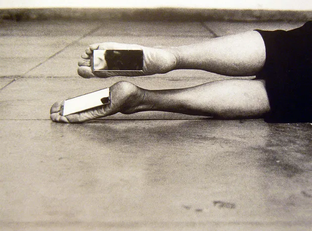

A body art põe o corpo tão em evidência e o submete a experimentações tão variadas, que sua influência estende-se aos dias de hoje. Se na arte atual as possibilidades de investigação do corpo parecem ilimitadas - pode-se escolher entre representar, apresentar, ou ainda apenas evocar o corpo - isso ocorre graças ao legado dos artistas pioneiros.